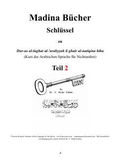

MAMadina arab tili darsligining ikkinchi qismi uchun nemis tilidagi grammatik qo'llanma.
Ushbu kitob Shayx doktor V. Abdur Rahimning mashhur 'Durus al-lughat al-arabyyah' (Madina arab tili) darsligining ikkinchi qismi uchun nemis tilidagi grammatik kalit va tushuntirishlar to'plamidir. Qo'llanma o'quvchilarga arab tili qoidalarini mustaqil o'rganishda yordam berish uchun har bir dars bo'yicha batafsil grammatik tahlil va lug'atlarni o'z ichiga oladi.